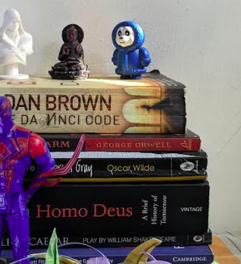
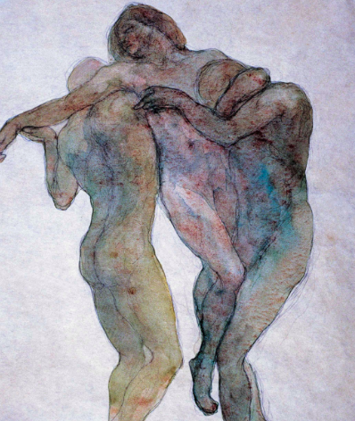
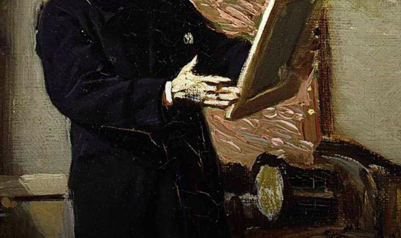
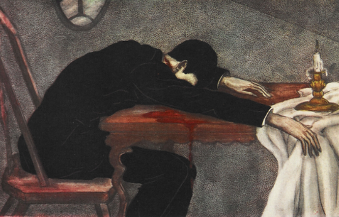
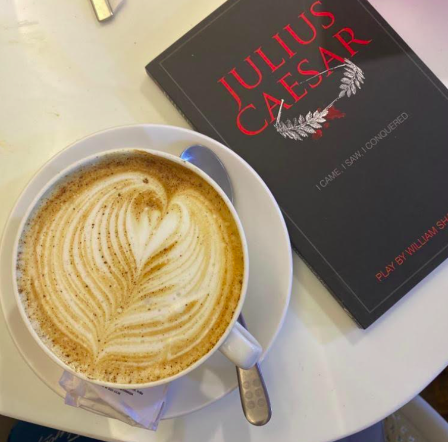

As the pages of 2023 turn, I find myself immersed in a rich tapestry of stories, ideas, and perspectives. This year's reading journey has been a captivating exploration of diverse worlds and narratives. From the profound to the thrilling, each book has been a unique portal into the vast landscapes of human experience. Join me as I reflect on the literary odyssey that defined this extraordinary year.
1. Sapiens by Yuval Noah Harari stands out as a truly exceptional and insightful read, making it one of the highlights of the year. The book's exploration of evolution, religion, and societal concepts was masterfully done, providing a simplified yet profoundly valid perspective. What set it apart was its ability to engage without ever becoming tedious. The author's approach, treating the reader as knowledgeable and understanding, rather than assuming ignorance, added a layer of enjoyment. Overall a compelling candidate for a second read.
2. Kane & Abel by Jeffery Archer is storytelling at its best. The author's ability
to weave a gripping tale is unparalleled. The closing sentence, just eight words, hit hard and made
me relive the entire book.
The story follows two men, each with their own ideals, whose paths cross over 60+ years. If
only...
Even though the book doesn't pass the Bechdel test, it changed how I experience stories. The
characters are so well developed, and their intertwining destinies kept me hooked. "Kane and Abel"
is a captivating exploration of ambition, rivalry, and the lasting impact of choices.
3. A Brief History of Time by Stephen Hawking has been a constant source of enlightenment, and this eighth reading, likely my last, was no exception. Each encounter with the book brought new understanding. His ability to make profound ideas accessible to everyone in the most straightforward way is remarkable. This final read solidified the book as a timeless masterpiece, confirming that only Hawking could present cosmology with such clarity and depth.
4. The Second World War by John Keegan: Upon a friend's recommendation, I delved into "The Second World War," a departure from my usual reading preferences. Initially laboriousness, but as I progressed, I discovered the hidden gems within its pages. What made the read intriguing was the exploration of scientific advancements spurred by the war. While there were moments where the pace slowed, pushing me to eagerly anticipate what lay ahead, completing "WW2" left me with a profound sense of fulfillment. The book even reignited my interest in revisiting the virtual battlefields of "Call of Duty: World at War," XD.

5. The Prophet by Khalil Gibran emerges as a literary balm, penned in the aftermath of World War I, offering solace and wisdom. Regardless of one's religious stance, or lack thereof, Gibran crafts a work of profound beauty that suggests goodness and righteousness can exist independently of faith. It stands as Gibran's magnum opus, achieving global recognition by being translated into over 100 languages. Remarkably, it has never fallen out of print. Immensely profound.
6. The Theory Of Everything by Stephen Hawking born from a series of lectures at Cambridge University, serves as an accessible gateway to the intricate world of scientific theories about the universe. This work acts as a comprehensive guide of the past and present theories in physics, providing readers with an enlightening journey through the complexities of the universe. For those who found "A Brief History of Time" a bit challenging, "The Theory of Everything" serves as a more digestible counterpart, making the head-scratching concepts of physics more approachable.
7. The Richest Man in Babylon by George S. Clason may seem simple, even redundant, but its necessity is undeniable. This book claims its lessons has the power to change your perspective on personal finances. Its straightforward wisdom, though basic, is transformative. Embracing its lessons can fundamentally alter your approach to wealth and success.
8. 2nd Change by James Patterson receives a solid "5" for its entertaining plots. However, it falls short with a "1" for stereotyping women. The format of bite-sized chapters makes it ideal for guilty pleasure reading and convenient for on-the-go moments or travel, catering to those times when committing to serious reading may be a challenge.
9. 1984 by George Orwell is a literary masterpiece that has left an indelible mark on me. The vivid imagery is captivating, painting a disturbing vision of a world gone mad. What makes this read exceptional is its enduring relevance in today's world. I find myself quoting and bringing up this book in discussions, a testament to its impact. It stands as the most memorable and disturbing depiction of a potential nightmare (read: Orwellian). The book, with its bleak, dreary, and frightening atmosphere, is nothing short of brilliant.
10. The Picture of Dorian Gray by Oscar Wilde delves into the profound question of facing one's soul without denial. The narrative explores the concept of a mirror to consciousness, forcing one to confront the naked truth. In this exploration, Wilde challenges the conventional notion that art possesses the power to influence man; instead, he suggests it is the power of the man, (an active act in doing so,) to be influenced by art.
Wilde's irony lies in the idea that art, not the individual, seems to hold the soul in its truest sense. For is not having a soul, same as having the omnipotent divine in you? In being truthful to oneself? The separation of body and spirit, as articulated by Wilde, contrasts the pitfalls of emotional impulsivity with the beauty of science's emotionlessness. This highlights the tension between subjective experience and objective observation, where subjective emotions carry zero ethical value.
PS: Fails Bechdel Test


"All art is quite useless." ~Oscar Wilde
11. The Patiala Quartet by Neel Kamal Puri left me wanting a bit more, particularly in terms of character development. The narrative felt rushed, leaving me uncertain about my feelings towards the characters. I also anticipated a deeper exploration of the militancy that gripped Punjab during that tumultuous decade. While the book falls short in these aspects, it still offers a glimpse into a compelling narrative that could have been more immersive with a bit more depth.
12. Da Vinci Code by Dan Brown : I must express my strong aversion to the author's approach. I find myself resenting Brown for what I perceive as spoon-feeding. My discontent stems from what I see as an overabundance of coincidences, numerous logical fallacies that only seem to make sense because the author wills them to, and the entire trope of symbolism involving As and Vs. Which, in all honesty, appears to be nothing more than confirmation bias, which also seems to be on what the foundation of plot is built upon.
The short sentences and the unrealistic dialogues Professor Langdon further detract from the authenticity of the narrative. In my opinion, the book falls short of delivering a genuine reading experience (personally).
13. Homo Deus by Yuval Noah Harari takes a departure from the plot of its predecessor, "Sapiens," where Humanities played a pivotal role, to delve into the realm of Science. With my familiarity in Sciences, I found it challenging to appreciate this book as much as its prequel. While the initial chapters set a strong ideological and factual tone, I observed a loss of momentum as the narrative progressed. At times, I found myself skimming pages. The book, undoubtedly insightful, gave me the impression of consuming a series of popular science articles, watching sci-fi movies, and attending a transhumanist meetup.
14. The Kite Runner by Khaled Hosseini impresses with vivid imagery, engaging prose, and strong character development. The narration style is easy to digest, enhancing the overall reading experience. However, what gives me pause is the reliance on chance encounters and coincidences to propel the plot forward. Instances like the call from Rahim Khan and his subsequent disappearance, Amir abruptly leaving his family, and surviving encounters with the Taliban strike me as somewhat contrived. Additionally, the choice to make the childhood bully the main antagonist gives the narrative a Disney-esque quality set in the challenging backdrop of Afghanistan, raising concerns of Orientalism.

15. Julius Ceasar by William Shakespeare stands out for its profound quotes and speeches. As a fan of Shakespeare's works, I found this play to be a captivating addition. The iconic speeches, such as Antony's plea to "Friends, Romans, countrymen, lend me your ears," showcase Shakespeare's unparalleled ability to capture the depth of human emotion. The play challenges conventional notions of morality, making the audience question who the true antagonist or protagonist is. The moral grey-ness of characters like Brutus, adds complexity to the narrative and elevates "Julius Caesar" beyond a mere historical drama.
*Reviews loading...